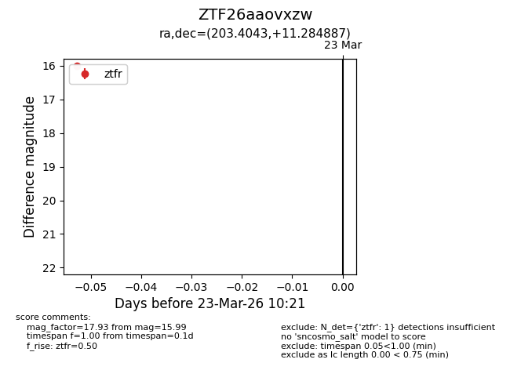
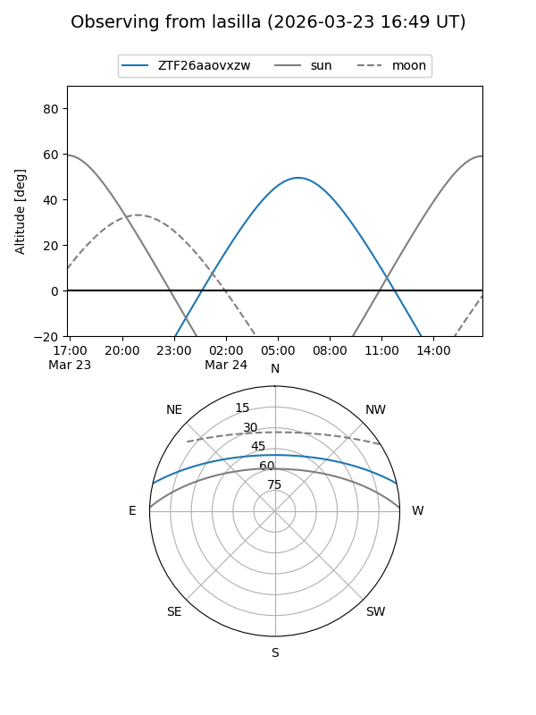
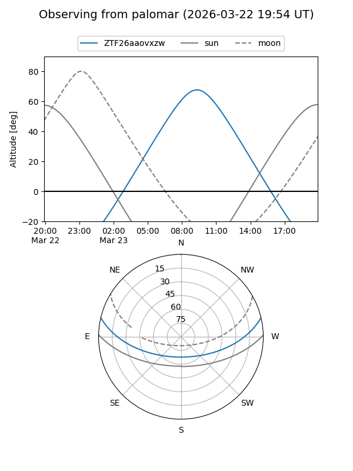

ZTF26aaovxzw
Target ZTF26aaovxzw at 2026-03-23 10:23
Aliases and brokers:
FINK: link
Lasair: link
ALeRCE: link
alt names
ZTF26aaovxzw (ztf,fink_ztf)
Coordinates:
equatorial (ra, dec) = 203.4043,+11.28489
equatorial (HMS+DMS) = 13:33:37.03,+11:17:05.59
galactic (l, b) = (336.9932,+71.31106)
Flags:
Photometry:
last ztfr=15.99
1 ztfr detections
Lightcurve

Visibility


Additional plots